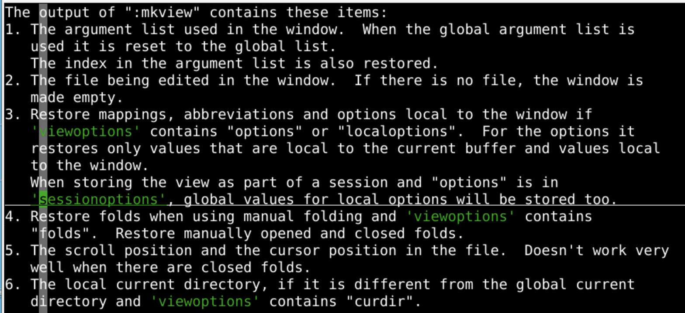
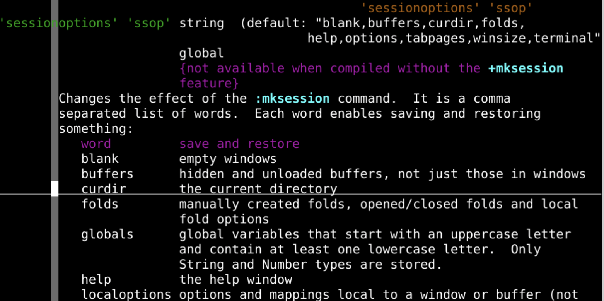
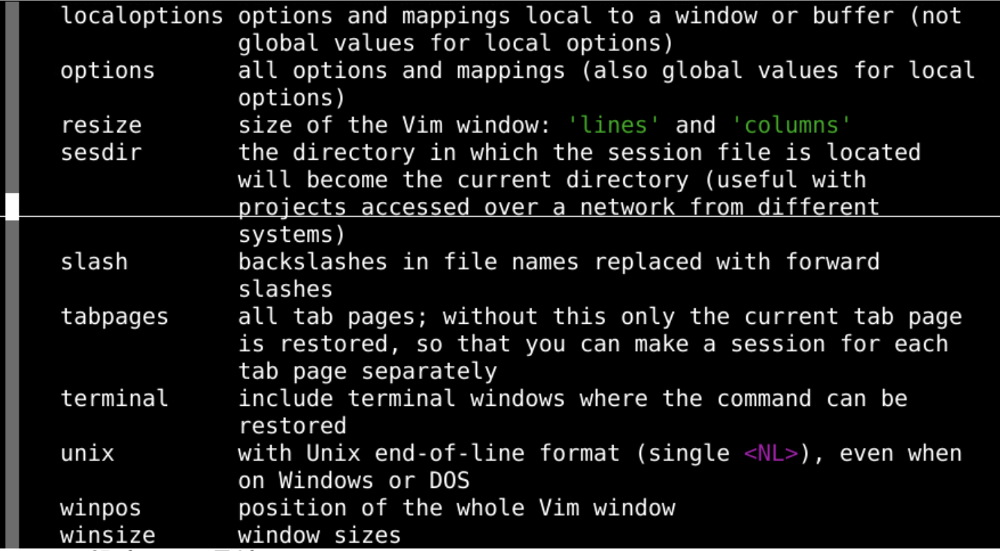
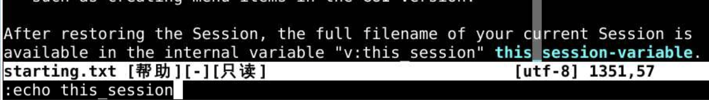
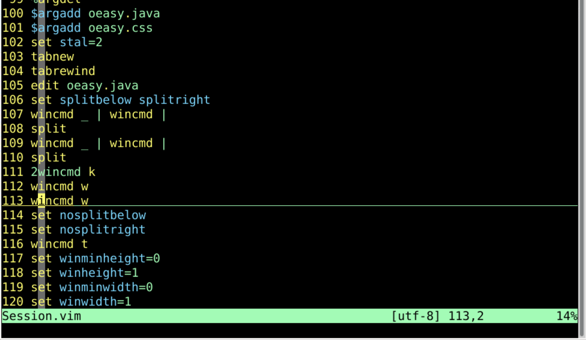
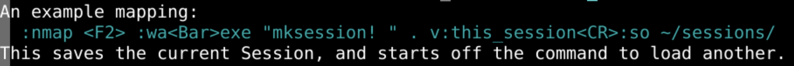
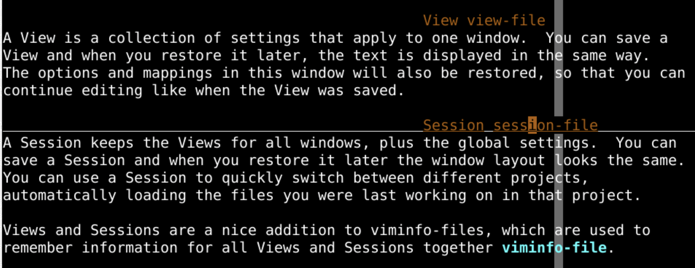

map <c-j> <c-w>jmap <c-k> <c-w>kmap <c-h> <c-w>hmap <c-l> <c-w>lmap <c-left> :tabn<cr>map <c-right> :tabp<cr>map <c-s> :%s/5.1/5.2/g<cR>:wnext<cr>:unmap a|" unmap a:mkview、:loadview来保存读取:tabnew如果 有这个功能的话:mkview附近:h mkview
view 里面的可以包括:argsviewoptionsviewoption相关的有一个sessionoptionssessionoptions会话选项
session就包括下列选项optionsblnak 空白窗口buffers 所有缓存curdir 当前目录folds 折叠globals 全局变量localoptions 本地选项:mkview的活儿都干了么sessionoptions有以上这些:mksession就可以完成:mkview的工作sessionoptions会话选项sessionoptions 添加更多选项:set sessionoptions+=resizeoptions 所有的选项option 和 映射mapresize 窗口的行和列sesdir session会话文件所在的目录curdirsesdir、curdir都没有的话absolute pathslashunix 文件名里面的反斜杠会变成斜杠windows 到 unixlike 有用tabpages 选项卡页面terminal 终端存储的命令winpos、winsize 窗口window的大小和位置
tabs 到 window:mksession:mksession 保存会话
:echo this_sessionsession.vim git clone http://gitee.com/overmind1980/oeasyvim.git`
vi -o oeasy.java oeasy.css oeasy.html
:mks[ession]
:so[urce] session.vim cd ..
cp oeasyvim oeasy
cd oeasy
vi -o oeasy.java oeasy.css oeasy.html
:mksessionSession.vimvim -S Session.vim:source Session.vim./sessions:mks ~/sessions/oeasy.session ~/session下建立工程目录~/sessions/oeasy.session ~/sessions/o2z.session ~/sessions/o3z.session ls ~/sessions/vim -S ~/sessions/oeasy.session:mksession的任务:map <F2> :mks!<cr>:map <F2> :wa<Bar>mks!<cr>:map <F2> :wa<Bar>exe "mksession! " . v:this_session<cr>:echo v:this_session
:source ~/oeasy/oeasy.vim 也可以指定一个功能键:map <F3> :source ~/oeasy/oeasy.vim<cr>
:mkview 保存窗口视图:mksession 保存整个会话:mkview:mksession:mksession 可替代 :mkviewview 和 session 都是 viminfo 的有益补充？？！Sessionsession:mkssession:source Session.vimvim -S Session.vim:mksession可以替代:mkviewviminfo?!😨